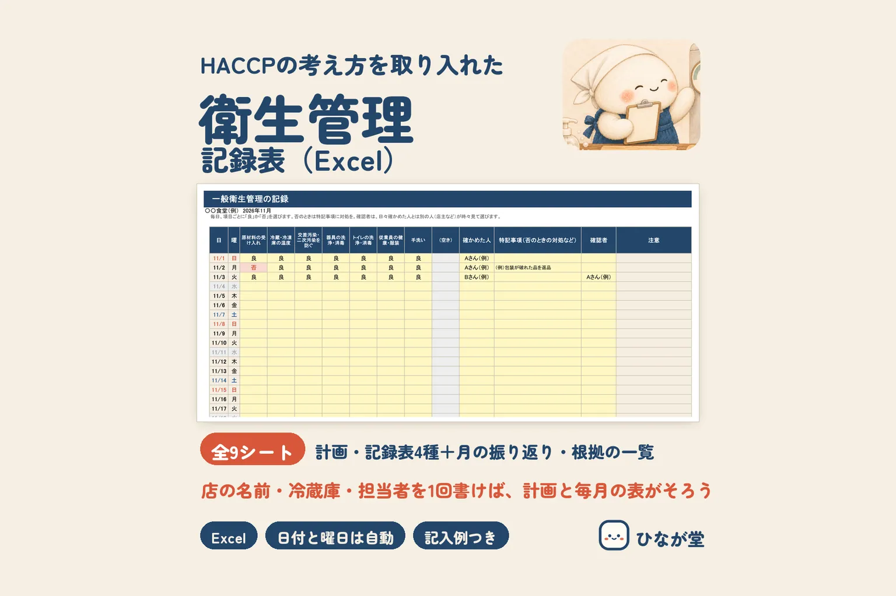

小さな飲食店でも、衛生管理の計画を作り、その実施状況を記録して残すことが決まりになっています。ただ、「何をどこまで書けばいいの？」「毎日続けられるかな」と迷う方も多いはずです。決まりの中身と、記録を続けるための工夫を順に見ていきます。
決まりの中身：計画を作り、記録して、残し、見直す
食品衛生法の施行規則（第66条の2 第3項）では、営業者がすることとして、次の4つが書かれています。
- 衛生管理計画を作り、働く人などに周知する（第1号）
- 手順書を、必要に応じて作る（第2号）
- 衛生管理の実施状況を記録し、保存する（第3号）。保存の期間は、取り扱う食品が使われたり食べられたりするまでの期間をふまえて「合理的に設定する」とされています
- 計画と手順書の効果を確かめ、必要に応じて見直す（第4号）
飲食店は、施行規則（第66条の3）で、小規模な営業者などと同じ「HACCPの考え方を取り入れた衛生管理」の側に入ります。条文を読んだかぎりでは、働く人の数で分けている書き方ではありませんでした。
厚生労働省のページでは、業界団体が作り、厚生労働省が内容を確かめた「手引書」を参考に、計画づくり・周知・記録・保存・振り返りなどを行っていれば、決まりを守っているとみなす、と案内されています。小さな一般の飲食店向けの手引書は、公益社団法人 日本食品衛生協会のページで見られます。
記録するのは、主に2つの「確認」
手引書（小規模な一般飲食店事業者向け 概要版）では、記録する中身が大きく2つに分かれています。
① 一般衛生管理（お店のふだんの衛生）
- 原材料を受け取るときの確認
- 冷蔵庫・冷凍庫の温度の確認
- 生の肉や魚から、ほかの食品へ菌がうつらないようにする工夫
- 器具などの洗浄・消毒
- トイレの洗浄・消毒
- 働く人の健康と、衛生的な作業着
- 衛生的な手洗い
② 重要管理（メニューごとの確認）
メニューを、調理のしかたで3つのグループに分けて、グループごとに確かめ方を決めます。
- 加熱しないもの（さしみ・サラダ など）
- 加熱して、温かいまま出すもの
- 加熱したあと冷まして出すもの
それぞれを「いつ」「どのように」確かめるか、「問題があったとき」にどうするかを計画に書き、毎日「良・否」で記録していく形です。手引書には温度の例なども載っていますが、どの数値で管理するかは、手引書や保健所の指導を確かめて、お店で決めます。
記録の形：1日の終わりに「良・否」、問題があった日だけ詳しく
手引書の記録の形は、次のような流れです。
- 1日の終わりに、項目ごとに「良」か「否」をつける
- 確かめた人が名前を書く
- 「否」の日は、何があって、どう対処したかを書く
- できれば、毎日書いた人とは別の人（店主など）が、週に1回ほど目を通して名前を書く
- 1か月などの区切りで記録を振り返り、メニューや仕入れ先、働く人、設備が変わったときは計画を見直す
毎日すべてを文章で書く必要はなく、問題があった日だけ詳しく書く、という考え方です。これなら忙しい日でも続けやすくなります。なお、条文そのものは「実施状況を記録し、保存する」で、「毎日」と回数までは書いていません。毎営業日つける形は手引書のやり方です。1人のお店では別の確認者を立てにくいので、自分で週に1回見直す日を決めておくなど、続けられる形にしておきましょう。
記録はいつまで残す？
上で書いたとおり、条文には「何年」という決まった年数は書かれていません。自治体が配っている記録表には、目安が書かれているものがあります。たとえば茨城県が出している「衛生管理の記録簿」（東京都の編集）には、記録表は最後に書いてから1年以上残す、とあります。ただ、これは1つの例です。お店の地域の保健所の案内を確かめて、残す期間をお店で決めておきましょう。
手書きでもExcelでも、続けるコツ
- 書くのは閉店のときの1回だけにする…冷蔵庫の温度のように、1日のうちに何回か見るものも、記録の時間は決めておくと書きもれが減ります
- 毎月同じことを書かない…店の名前・担当者・冷蔵庫の名前・メニューは、表に先に入れておきます。手書きなら、名前を入れた白紙を1か月分まとめて印刷しておくと楽です
- 定休日は先に印をつける…書いていない日が「休み」なのか「書き忘れ」なのかが、あとで見てすぐわかります
- 温度は「良・否」だけでなく数字も…数字が残っていると、少しずつ上がっている冷蔵庫などに早めに気づけます
- 週に1回、見直す日を決める…できれば別の人が見ます。「否」なのに対処が書いていない日を、その場で埋めます
- 厨房にパソコンが置けないお店は、紙で書いて月末にまとめる…紙の記録表をそのまま綴じて残す形でもかまいません
- 1冊＝1か月にして、月ごとに残す…保健所から求められたときに、その月の分をすぐ出せます
よくある質問
決まった記録表の様式（書式）はありますか？
法令で決められた様式はありません。手引書に記録表の例があり、それを使っても、自分のお店に合わせて作った表でもかまいません。保健所から様式の指定や指導があるときは、そちらに合わせてください。
1人でやっているお店でも、記録はいりますか？
この記事で読んだ条文には、働く人の数で記録が要らなくなる書き方はありませんでした。1人のお店で、確認者の名前をどう書くかなど、細かい形はお店の地域の保健所に確かめると安心です。
お菓子の製造やキッチンカーでも同じですか？
手引書は業種ごとに分かれています。菓子の製造・販売や、キッチンカーなど、一般の飲食店と違う営業のときは、業種に合う手引書と保健所の案内を確かめてください。厚生労働省のページに手引書の一覧があります。
記録をつけていれば、それで決まりを守れていますか？
記録は「実際にやったこと」を残すものです。計画を働く人に伝え、そのとおりに行い、記録し、振り返って見直す、という流れ全体が求められています。表に書いて保存するだけで、法令に合っていることになるわけではありません。
ひなが堂の記録表：無料のお試し版と全部入り版
ひなが堂では、ここまでの流れに合わせた Excel の記録表を BOOTH でお分けしています。最初に1回、店の名前・定休日・担当者・冷蔵庫などの機器・確かめる項目・メニューを入れると、衛生管理計画と記録表の見出しや選ぶリストにすべて入ります。日付と曜日は年と月を入れるだけで並び、お店で決めた温度の目安の外は色でわかります。印刷して手書きでも使えます。温度などの数値は入っていないので、お店で決めて入れます。
- 無料のお試し版…担当者3人・機器2台・メニュー6品まで。衛生管理計画と、一般衛生管理・重要管理・温度の記録が使えます（BOOTH のお試し版のページ）
- 全部入り版（2,480円）…担当者10人・機器6台・メニュー20品まで。健康チェックと月の振り返りのシートも入っています（BOOTH の全部入り版のページ）
どちらも、パソコンの Microsoft Excel（Windows 版）で動作を確かめています。法令で決められた様式や、保健所が認めた様式ではありません。まずはお試し版で、お店のやり方に合うかどうか確かめてみてください。くわしくは商品のページにまとめています。
まとめ
小さな飲食店の衛生管理は、「計画を作る→働く人に伝える→確かめて記録する（手引書では毎営業日）→残す→振り返って見直す」の流れです。記録は1日の終わりに「良・否」をつけ、問題があった日だけ詳しく書く形にすると続けやすくなります。数値や保存の期間は手引書と保健所の案内で確かめて、お店で決めておきましょう。
ご注意この記事は、法令や公的機関・業界団体の案内をもとにした一般的なまとめです。お店にどう当てはまるか、記録の形や保存の期間などは、お店の地域の保健所で必ずご確認ください。
出典・確認日
この記事の期限・数字は、次の公式の情報で確かめました（確認日：2026-11-12）。今後の制度変更などで目安が変わることがあります。最新の情報は、お住まいの市区町村や各機関のホームページでご確認ください。
- 食品衛生法 第51条（衛生管理の基準と、営業者が措置を定めて守ること）
https://laws.e-gov.go.jp/law/322AC0000000233 - 食品衛生法施行令 第34条の2（小規模な営業者等）
https://laws.e-gov.go.jp/law/328CO0000000229 - 食品衛生法施行規則 第66条の2 第3項（衛生管理計画・手順書・記録と保存・見直し）・第66条の3（飲食店営業など）
https://laws.e-gov.go.jp/law/323M40000100023 - 厚生労働省「HACCPの考え方を取り入れた衛生管理」（手引書を参考に行っていれば守っているとみなす、の案内）
https://www.mhlw.go.jp/stf/seisakunitsuite/bunya/kenkou_iryou/shokuhin/haccp/01_00019.html - 厚生労働省「HACCPの考え方を取り入れた衛生管理のための手引書」の一覧
https://www.mhlw.go.jp/stf/seisakunitsuite/bunya/0000179028_00003.html - 公益社団法人 日本食品衛生協会「HACCP手引書・関連資料」（小規模な一般飲食店事業者向け 概要版 令和6年1月改訂第3版）
https://www.n-shokuei.jp/eisei/haccp_e.html - 茨城県「衛生管理の記録簿」（編集：東京都。記録表は最後に記入してから1年以上保存、の例）
https://www.pref.ibaraki.jp/hokenfukushi/seiei/eisei/documents/eiseikanri_kirokubo.pdf